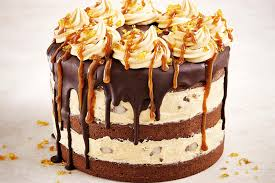

Food is something that everyone needs. But that doesnt mean that we should accept anything. And come on who doesnt like to admire and eat delicious food. This article is for the people who really love the art of making and eatting food. Scroll down to see a few foods worth mentioning.

There are many different and wonderful kinds of food all around the world. With there being so many unique they are some that are spefific to different countries. Like how Canada is known for poutine and maple syrup or how U.S.A is known for thankgiving dinners and cheeseburgers.